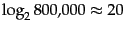
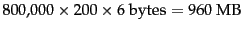
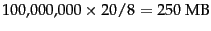

| encoding | postings list | ||||||||||||
| the | docIDs | ... | 283042 | 283043 | 283044 | 283045 | ... | ||||||
| gaps | 1 | 1 | 1 | ... | |||||||||
| computer | docIDs | ... | 283047 | 283154 | 283159 | 283202 | ... | ||||||
| gaps | 107 | 5 | 43 | ... | |||||||||
| arachnocentric | docIDs | 252000 | 500100 | ||||||||||
| gaps | 252000 | 248100 | |||||||||||
Recall from Table 4.2 (page 4.2 ) that Reuters-RCV1 has 800,000 documents, 200 tokens per document, six characters per token, and 100,000,000 postings where we define a posting in this chapter as a docID in a postings list, that is, excluding frequency and position information. These numbers correspond to line 3 (``case folding'') in Table 5.1 . Document identifiers are  bits long. Thus, the size of the collection is about  and the size of the uncompressed postings file is .
To devise a more efficient representation of the postings file, one that uses fewer than 20 bits per document, we observe that the postings for frequent terms are close together. Imagine going through the documents of a collection one by one and looking for a frequent term like computer. We will find a document containing computer, then we skip a few documents that do not contain it, then there is again a document with the term and so on (see Table 5.3 ). The key idea is that the gaps between postings are short, requiring a lot less space than 20 bits to store. In fact, gaps for the most frequent terms such as the and for are mostly equal to 1. But the gaps for a rare term that occurs only once or twice in a collection (e.g., arachnocentric in Table 5.3 ) have the same order of magnitude as the docIDs and need 20 bits. For an economical representation of this distribution of gaps, we need a variable encoding method that uses fewer bits for short gaps.
To encode small numbers in less space than large numbers, we look at two types of methods: bytewise compression and bitwise compression. As the names suggest, these methods attempt to encode gaps with the minimum number of bytes and bits, respectively.